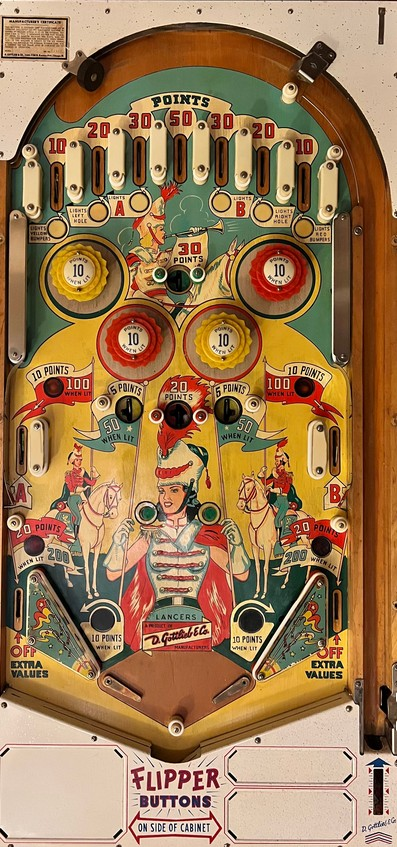

Know how to plunge into any of the game's 7 top lanes. Despite their up-front point values, the most meaningful top lanes are the outermost lanes that light pop bumpers or lanes #3 and #5 that light side lanes for 100 points. Avoiding draining down an out lane at almost any cost, especially if the out lane isn't lit, because out lanes shut off all increased scoring earned from top lanes.
The 7 top lanes score 10-20-30-50-30-20-10 from left to right.
The left and right 10-point top lanes light the yellow and red bumpers respectively. Every time a 1-point switch is scored, the game alternates between what I call "yellow mode" and "red mode". In "yellow mode", the yellow pop bumpers will be lit if the leftmost top lane has been made, and no bumpers will be lit otherwise. The same is true for "red mode" relating to the red pop bumpers. Under this system, either the yellow bumpers, the red bumpers, or no bumpers will be lit at any given time, but the game will never light all 4 bumpers at once.
The left and right 20-point top lanes light the left and right saucers in the line of 3 located just below the pop bumpers. In the line of 3, the left and right saucers score 5 points or 50 when lit, and they kick the ball downwards towards the flippers or slingshots. The center saucer in the line of 3 always scores 20 points and kicks the ball upward into the pop bumper nest, often directly into the top saucer which always scores 30 points.
The left and right 30-point top lanes light A and B, which are the middle left and middle right side lanes respectively. These lanes score 10 points, or 100 when lit.
The center top lane scores 50 points and does not light any additional features.
There are no in lanes. Flippers back up directly to the slingshots. There is 1 out lane on each side. The flippers are quite far apart, but there is a center post at the same height as the tips of the lowered flippers, so the game is not as much of a center drain monsters as you might expect. One slingshot and one out lane are lit at a time. Slingshots score 1 point or 10 when lit, and out lanes score 20 points or 200 when lit as well as turning off any increased scoring earned from the top lanes (lit bumpers, lit center saucers, and lit A-B side lanes). The lit slingshot is always on the opposite side of the table as the lit out lane, and they alternate based on 1-point switch hits.
There is no end of ball bonus or extra ball feature. Tilt ends game, but only for the player who tilted.
The below picture of Lancers' playfield was taken from Pinside, where it is listed as image #3406048.
